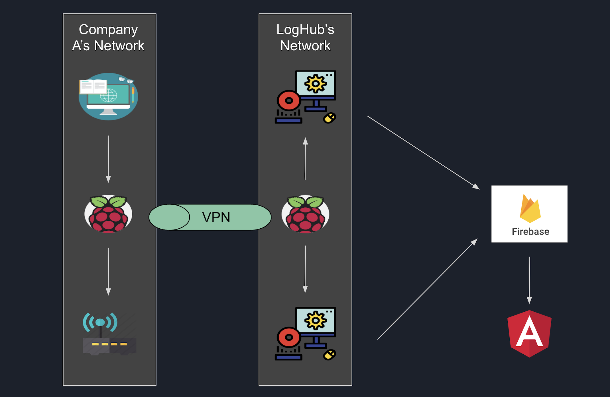
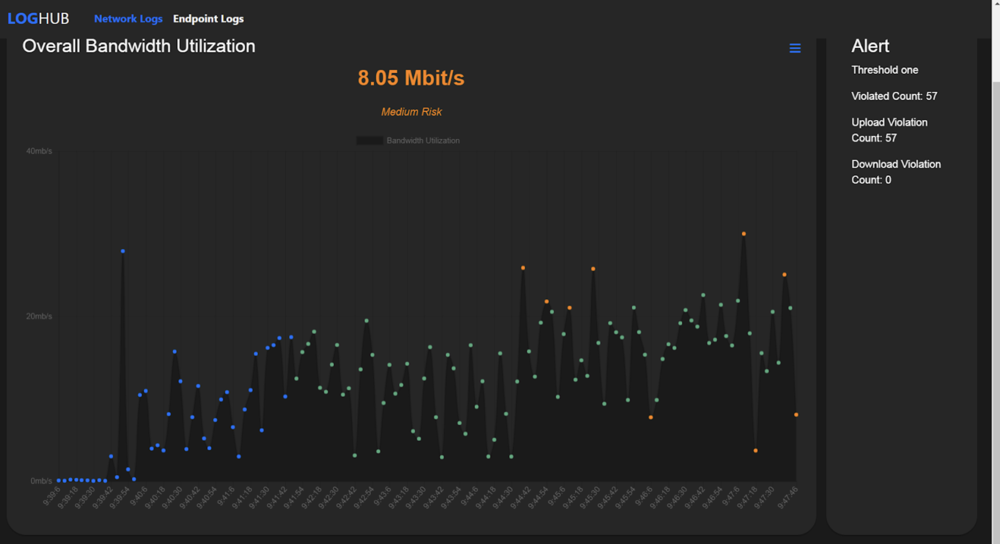

LogHub

LogHub, a security-based project I developed with my teammates during my time in school,
aimed to create a software that can easily monitor and analyze an organizations operations in real time so that small/medium enterprises (SMEs) are able to gain visiblity
to the flow of information within their enterprise.
LogHub addressed this problem through three phases: collection, processing, and visualization. In this writeup, I will focus mostly on the data processing portion.
In the collection phase, we first deployed an EndPoint Service on each system within our clients' organization, interacting with our Raspberry Pi's Collector.
This Raspberry Pi collector then transmitted the logs via a VPN to our internal collector, which subsequently forwarded them to our database.
Moving to the processing phase, I created a Python scikit that utilised a K-nearest neighbor algorithm to establish the network traffic baseline.
The data is initially baselined, with the first 50 logs designated as training data to establish an individual baseline for risk categorization.
Using Python's Scikit-learn K nearest neighbour model, an unsupervised clustering algorithm,
data points are clustered based on their dates and bandwidth usage. Each input ("A") identifies its 15
nearest neighbors ("X"), which in turn find their own 15 nearest neighbors ("B").
The algorithm calculates the frequency of occurrence of "X" within "B" to determine risk.
This risk assessment considers both the count of occurrences and the distance between "X" and "A".
The baseline is periodically updated, processing all data points not included initially with each new log received.
These data points undergo the same risk categorization formula, and if the count exceeds 20, they are flagged as "Included" for future risk assessment,
ensuring the algorithm remains relevant over time.

Lastly, I displayed this data on a dashboard showcasing the risk
level with Blue (Training Point), Green (Low Risk), Orange (Medium Risk), Pink (High Risk), Red (Very High Risk) demonstrating the potential impact if a user were affected by a
cryptominer utilizing the computer’s network bandwidth without their knowledge.
Reflecting on the project, we identified an issue with the K-Nearest Neighbor algorithm's susceptibility to skewing.
For example, legitimate high-bandwidth activities, such as streaming a 4K video, might inadvertently affect the algorithm's baseline.
This could lead to flagging legitimate activities as low risk. Exploring alternative algorithms like K-Means could provide a more effective solution.